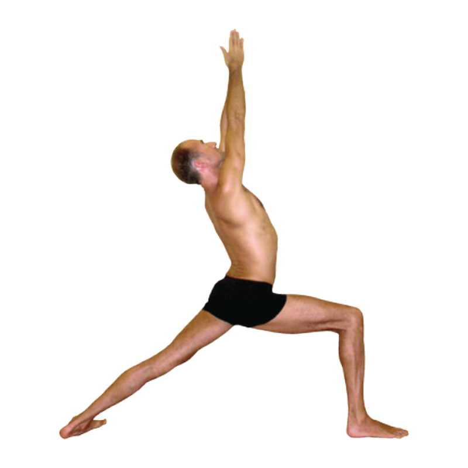

9:41
All Sangha
Good morning,
Dudu
. Day 23 of your practice.
Asana of the Day
Saturday

Warrior I
Vīrabhadrāsana A
Standing sequence · Pose
29
of
78
Practice This Pose
Details
Your Practice
View All
51
Poses learned
6
Day streak
3h
This week
Primary Series
51 / 78 poses
Quick Start
Led Class
Mysore
Learn
Today's Intention
"Practice, and all is coming."
— Sri K. Pattabhi Jois
Home
Schedule
Practice
Sangha